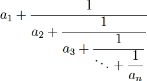

Home Page
F.A.Qs
Statistical Charts
Past Contests
Scheduled Contests
Award Contest
| Online Judge | Problem Set | Authors | Online Contests | User | ||||||
|---|---|---|---|---|---|---|---|---|---|---|
| Web Board Home Page F.A.Qs Statistical Charts | Current Contest Past Contests Scheduled Contests Award Contest | |||||||||
|
Language: Continuous Fractions
Description A simple continuous fraction has the form:  where the ai’s are integer numbers. The previous continuous fraction could be noted as [a1, a2, …, an]. It is not difficult to show that any rational number p⁄q, with integers p > q > 0, can be represented in a unique way by a simple continuous fraction with n terms, such that p⁄q = [a1, a2, …, an−1, 1], where n and the ai’s are positive natural numbers. Your task is to find and print the simple continuous fraction that corresponds to a given rational number. Input Input will consist of a series of cases, each one in a line. A line describing a case contains p and q, two integer numbers separated by a space, with 1020 > p > q > 0. The end of the input is indicated by a line containing Output Cases must be analyzed in the order that are read from the input. Output for each case will consist of several lines. The first line indicates the case number, starting at 1, using the format:
replacing The remaining lines must contain the continuous fraction corresponding to the rational number, p⁄q, specified in the given input line. The continuous fraction must be printed accordingly to the following rules:
Sample Input 75 34 65 60 0 0 Sample Output Case 1: 75 / 34 ..........1...... 2.+.------------- ............1.... ....4.+.--------- ..............1.. ........1.+.----- ................1 ............5.+.- ................1 Case 2: 65 / 60 ......1... 1.+.------ .........1 ....11.+.- .........1 Source |
[Submit] [Go Back] [Status] [Discuss]
All Rights Reserved 2003-2013 Ying Fuchen,Xu Pengcheng,Xie Di
Any problem, Please Contact Administrator